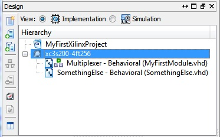
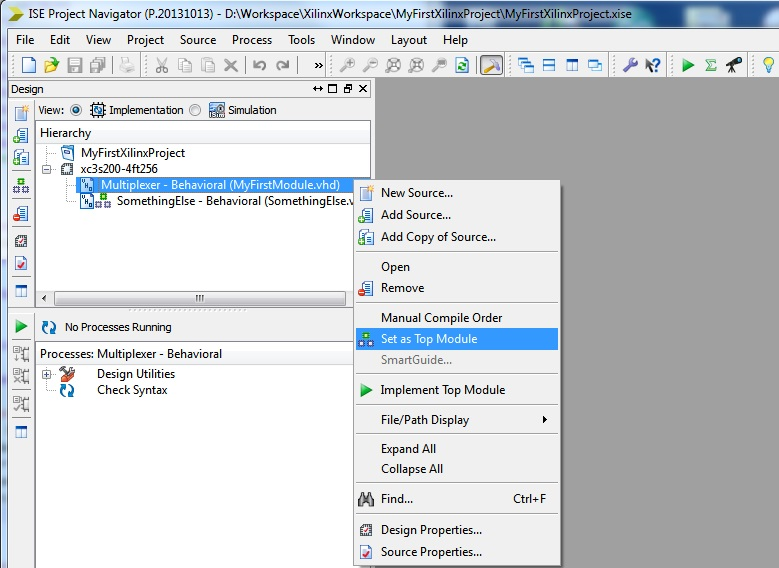
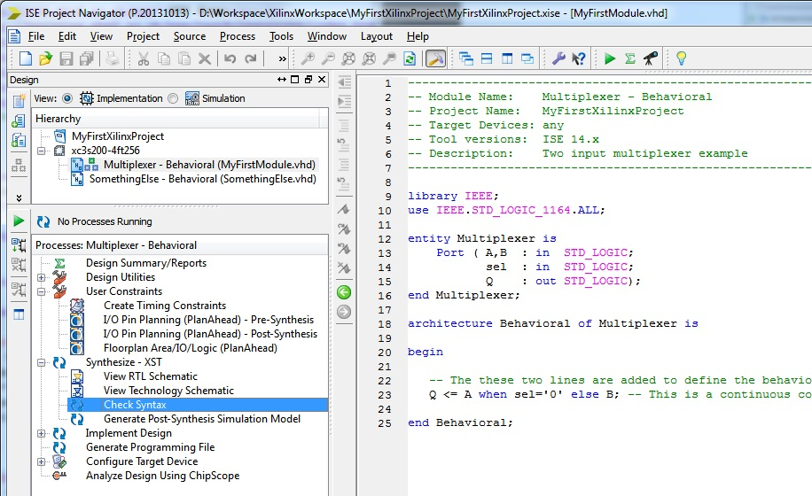

EEE6225 Systems Design
| Tutorial 1: Introduction to VHDL and Xilinx ISE |
| Analysing your file |
|
 Figure 1. Selected top level module |
Make sure your Multplexer - Behavioral (MyFirstModule.vhd) file is highlighted with the top level icon in the Hierarchy window (as shown in Figure 1, if not, press the right mouse button over the desired module to bring up the context-sensitive menu and click on set as Top Module. This process is shown in the Figure 2. |
|
 Figure 2. Selecting alternative top module |
Then examine the Processes window. From here look at the Synthesize-XST item, if there is a rather than a in the little square box to the left of it, click on this box to expand the tree of options for Synthesize-XST. Double click on the Check Syntax item. |
|  Figure 3. Processes for source window: checking file syntax |
If file syntax is correct, a green tick () will appear by the Check Syntax label. If instead you get a red cross (), syntax errors have been found. Their causes will be listed in the Console window which may be found along the bottom of the window. Read and act on these messages, (you may need to ask a demonstrator for help before re-checking). A line-number will usually point to the problem. Double-click Check Syntax to confirm that the changes have rectified previously found errors in the file, i.e. look for to the left of Check Syntax. If all is well then you can be reasonably sure that the file makes good VHDL sense. NOTE: Once you are more confident with VHDL there is no need to include this step simply proceed directly with Synthesis. |
| Continue on to Synthesis |